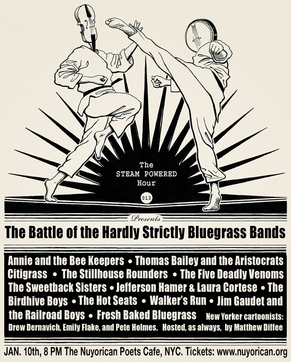

Entertaining city bumpkins and country slickers since 2007
Next Show: Sunday, December 13th

The Steam Powered Hour presents the first ever Big Apple Battle of the Hardly Strictly Bluegrass Bands. Twelve top "bluegrassish" bands will battle it out on stage for the right to play in the 2010 Hardly Strictly Bluegrass Festival in San Francisco. Participating bands include: Annie and the Beekeepers, The Birdhive Boys, Citigrass, The Five Deadly Venoms, Fresh Baked Bluegrass, The Hot Seats, Jefferson Hamer and Laura Cortese, Jim Gaudet and The Railroad Boys, The Stillhouse Rounders, The Sweetback Sisters, Thomas Bailey and the Aristocrats, and Walker's Run.
Three cartoonists from The New Yorker magazine; Drew Dernavich, Emily Flake and Pete Holmes will be on hand to provide visual comedic interludes. Hosted, as always, by Matthew Diffee.
Sunday Jan 10, 2010
8 PM (the contest is followed by an informal Jam till midnight)
The Nuyorican Poet's Cafe
236 East 3rd Street between Ave B and C
New York, NY
Tickets are $15 at the door. Get them for $10 in advance at www.nuyorican.org
Featured Highlights
| blah |
Come on by for our next show that has lots of good people doing good things for 10 bucks come on by for our next show |
| blah |
Come on by for our next show that has lots of good people doing good things for 10 bucks come on by for our next show |